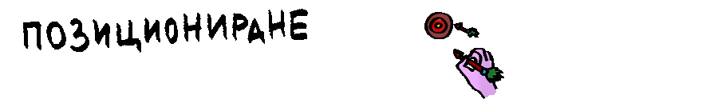

ВЪВЕДЕНИЕ В МАРКЕТИНГА
Позициониране
След като сме си избрали най- подходящия сегмент, който отговаря на компетенциите и ресурсите на фирмата, е време да помислим как потенциалните ни клиенти трябва да ни виждат. Време за позициониране. Какво е това, питате?
позициониране = целеви сегмент + диференциране
Целевият сегмент е сегментът, който сме избрали като например млади майки; жители на София, ако правим концерт там; или съществуващи клиенти, ако ще предлагаме някакъв ъпгрейд.
Диференциране е как да разграничим нашия продукт както от този на конкурентите, така и от други продукти, които предлагаме. Това е много важно, защото да кажем, че искате да отворите кафене. Кафенета има бол, така че трябва да се замислите какво по- различно може да предложите. Това зависи от интересите, връзките и възможностите ви. Може да е кафене, където се провеждат литературни четения или кафене, където има кът за деца или кафене, където се сервира само здравословна храна. Какво е вашето мечтано кафе?
Нивата на продукта
Също, тук имаме няколко нива. Първото, ядрото на бизнеса ви е ползата, в случая ободряване, а съответният базисен продукт е самото кафе: било то силно, луксозно или завъртяно. Второто, очаквано е да има на разположение захар и сметана, салфетки и т.н.. На следващото ниво имаме разширената оферта, която включва обслужване, за някои продукти гаранция, доставка и монтаж. Стига кафето ви да не е ужасно, сте като всички други кафенета; затова е важно да помислите с какво да привлечете клиентите. Това е последното ниво- потенциалът да направите преживяването на клиентите си уникално.
На по- високите нива обикновено е очевидно как може да се позиционирате- пращайте благодарствени писма на клиентите, направете онова усилие, което ще ги улесни, измислете как да обърнете деня им от скапан в удивителен. Но не забравяйте и да подобрявате непрекъснато основата си услуга. Ако сте най- великият суши готвач в света, а всяка хапка, приготвена от вас, е блаженство, всичко оставало само трябва да е задоволително, за да привлечете повече от достатъчно клиенти.
Също, понякога е добре да отклоняваме повече бизнес: ако сме затрупани с недоходоносна работа, трябва да опитаме да се позиционираме като по- скъпа, елитна, но по- качествена услуга.
Как да го направим?
Най- лесният начин да предадем нашите ценности на клиентите ни е чрез:
- - брандинг и месиджинг (било чрез медии или не): не винаги по- професионално е по- добре. Представете си, че имате услуга за почистване по домовете, а рекламата ви прилича на каталога на Икеа. Не искаме клиента да си помисли, че услугата ни е само за заможни хора, ако не е така. В такъв случай обикновена листовка с ясно описание на офертата би било идеално.
- - корпоративна идентичност (лого, цветове, мото): не случайно хранителните вериги ползват червени цветове, които пробуждат апетита, а банките- синьо, което се свързва с доверие и стабилност. Всичко това се изучава от психолози и UX дизайнери. Правилните думи и ценности привличат правилните клиенти.
Но разбира се най- същественото се предава при взаимодействието им с вас: учтивост, внимателност и полезност. Клиентите идват при вас за решения, а не за главоболия.
При избирането на позициониране може да пробваме да изберем две оси, които да отговарят на отношението ни или стила ни на работа, като противопоставянето на стандартизиран/ персонализиран подход, или на специалист/ общопрактикуващ. Следващата стъпка е да разположим конкурентите ни върху графиката.
След като имаме представа къде стоят конкурентите, е време за определяне на цели: икономически (пазарен дял, оборот, качество на услугите...), фирмени (развитие на сътрудници, на компетентностите, подобряване на работните условия...), и човешки (принос към социалния прогрес, опазване на околната среда, удовлетворение и гордост...).
Когато мислим как да се позиционираме трябва да имаме разбиране за разликата между какво правим (функции на продукта) и какво е различно от обикновения продукт. Функцията на продукта палто например е да пази от студа, но има стотици видове палта от които да избираме, да не говорим за якета, пончо и прочие.
В крайна сметка, най- важното е какво е нашето стойностно предложение (value proposition, наричано още в контекст brand positioning statement). Стойностното предложение представлява обещание, което марката ви дава на клиента, че ще подобри живота му, дори и да е по някакъв незначителен начин. То трябва да е незабавно видимо, ясно и приложимо за дадения клиент. За да постигнете това, добър трик е да го обясните с думите, които използват самите клиенти. Например не казвайте, че предлагате интегрирани CMS решения, а че предлагате начин за поддържане на връзка с клиентите.
Веднъж познавате ли клиентите си, решенията стават лесни. Просто подробност.
Е, готови сте: пристъпваме към частта, която повечето хора си представят като чуят за маркетинг- как да предложим продукта си на истински, пълнокръвни клиенти!